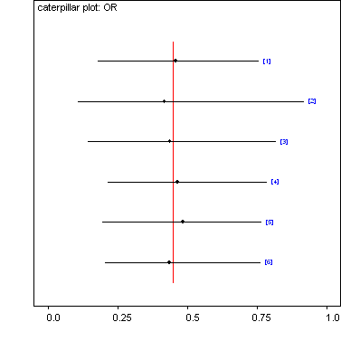
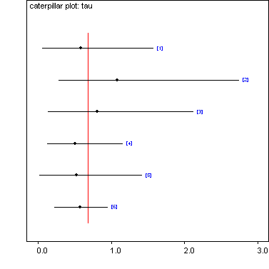

![[magnesium0]](magnesium0.bmp) Sensitivity to prior distributions:
Sensitivity to prior distributions:application to Magnesium
meta-analysis
model
{
# j indexes alternative prior distributions
for (j in 1:6) {
mu[j] ~ dunif(-10, 10)
OR[j] <- exp(mu[j])
# k indexes study number
for (k in 1:8) {
theta[j, k] ~ dnorm(mu[j], inv.tau.sqrd[j])
rtx[j, k] ~ dbin(pt[j, k], nt[k])
rtx[j, k] <- rt[k]
rcx[j, k] ~ dbin(pc[j, k], nc[k])
rcx[j, k] <- rc[k]
logit(pt[j, k]) <- theta[j, k] + phi[j, k]
phi[j, k] <- logit(pc[j, k])
pc[j, k] ~ dunif(0, 1)
}
}
# k again indexes study number
for (k in 1:8) {
# log-odds ratios:
y[k] <- log(((rt[k] + 0.5) / (nt[k] - rt[k] + 0.5)) / ((rc[k] + 0.5) / (nc[k] - rc[k] + 0.5)))
# variances & precisions:
sigma.sqrd[k] <- 1 / (rt[k] + 0.5) + 1 / (nt[k] - rt[k] + 0.5) + 1 / (rc[k] + 0.5) +
1 / (nc[k] - rc[k] + 0.5)
prec.sqrd[k] <- 1 / sigma.sqrd[k]
}
s0.sqrd <- 1 / mean(prec.sqrd[1:8])
# Prior 1: Gamma(0.001, 0.001) on inv.tau.sqrd
inv.tau.sqrd[1] ~ dgamma(0.001, 0.001)
tau.sqrd[1] <- 1 / inv.tau.sqrd[1]
tau[1] <- sqrt(tau.sqrd[1])
# Prior 2: Uniform(0, 50) on tau.sqrd
tau.sqrd[2] ~ dunif(0, 50)
tau[2] <- sqrt(tau.sqrd[2])
inv.tau.sqrd[2] <- 1 / tau.sqrd[2]
# Prior 3: Uniform(0, 50) on tau
tau[3] ~ dunif(0, 50)
tau.sqrd[3] <- tau[3] * tau[3]
inv.tau.sqrd[3] <- 1 / tau.sqrd[3]
# Prior 4: Uniform shrinkage on tau.sqrd
B0 ~ dunif(0, 1)
tau.sqrd[4] <- s0.sqrd * (1 - B0) / B0
tau[4] <- sqrt(tau.sqrd[4])
inv.tau.sqrd[4] <- 1 / tau.sqrd[4]
# Prior 5: Dumouchel on tau
D0 ~ dunif(0, 1)
tau[5] <- sqrt(s0.sqrd) * (1 - D0) / D0
tau.sqrd[5] <- tau[5] * tau[5]
inv.tau.sqrd[5] <- 1 / tau.sqrd[5]
# Prior 6: Half-Normal on tau.sqrd
p0 <- phi(0.75) / s0.sqrd
tau.sqrd[6] ~ dnorm(0, p0)I(0, )
tau[6] <- sqrt(tau.sqrd[6])
inv.tau.sqrd[6] <- 1 / tau.sqrd[6]
}
Data:
list(rt = c(1, 9, 2, 1, 10, 1, 1, 90), nt = c(40, 135, 200, 48, 150, 59, 25, 1159),
rc = c(2, 23, 7, 1, 8, 9, 3, 118), nc = c(36, 135, 200, 46, 148, 56, 23, 1157))
Initial values:
list(mu = c(-0.5, -0.5, -0.5, -0.5, -0.5, -0.5), tau = c(NA, NA, 1, NA, NA, NA),
tau.sqrd = c(NA, 1, NA, NA, NA, 1), inv.tau.sqrd = c(1, NA, NA, NA, NA, NA))
Results for 6 different prior distributions on the random-effects variance:
node mean sd MC error 2.5% median 97.5% start sample
OR[1] 0.4591 0.1723 0.007649 0.1779 0.4478 0.7565 1001 4000
OR[2] 0.4179 0.2539 0.006781 0.1076 0.3853 0.9179 1001 4000
OR[3] 0.4368 0.2237 0.006079 0.145 0.4175 0.8194 1001 4000
OR[4] 0.4639 0.1476 0.0058 0.216 0.4525 0.786 1001 4000
OR[5] 0.483 0.1577 0.00894 0.1943 0.4829 0.7668 1001 4000
OR[6] 0.4347 0.141 0.005219 0.2055 0.4199 0.764 1001 4000
tau[1] 0.5845 0.3983 0.02097 0.05697 0.51 1.576 1001 4000
tau[2] 1.081 0.6317 0.03234 0.2852 0.9472 2.748 1001 4000
tau[3] 0.8119 0.5104 0.02479 0.1417 0.7081 2.123 1001 4000
tau[4] 0.5084 0.2664 0.01257 0.1279 0.4659 1.165 1001 4000
tau[5] 0.5245 0.3707 0.02433 0.02662 0.4604 1.421 1001 4000
tau[6] 0.5736 0.1846 0.006752 0.2307 0.5669 0.9538 1001 4000
Note: Uniform prior on variance increases uncertainty about the mean treatment effect.
